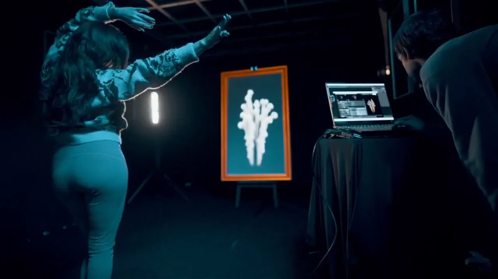
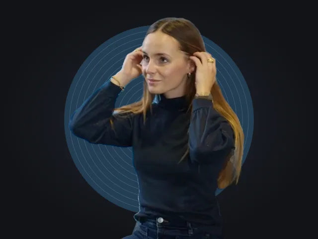
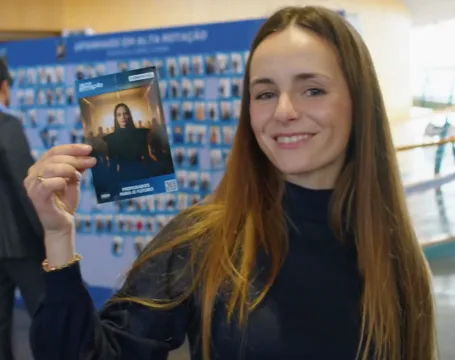
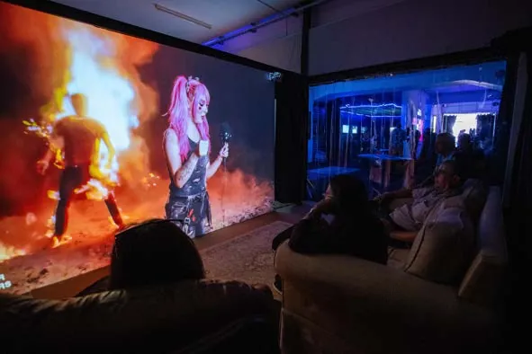
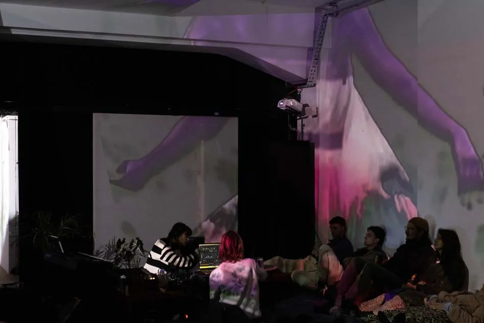
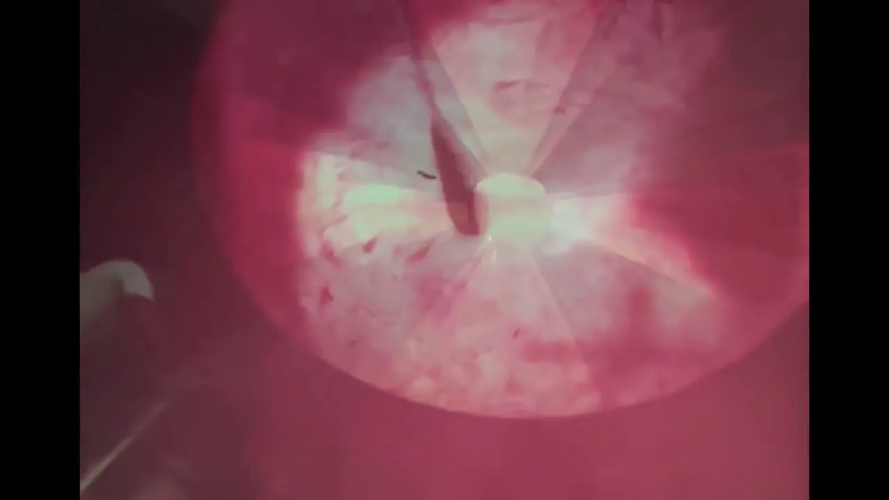
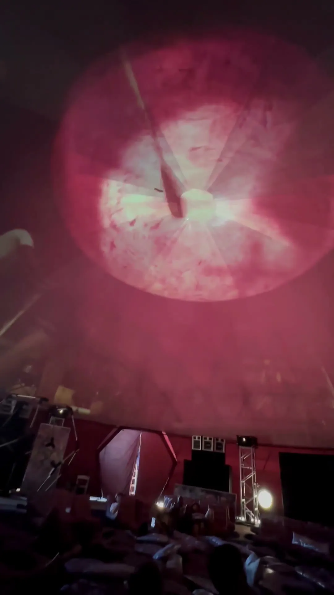

204.ai / Installations & live work
Experiences.
Become part of the work. Live transformations, portraits to take home, and immersive worlds that surround you.
Explore the experiences ↘Featured experiences.
Magic Mirror.
A reflection that follows your movement. Become a character, step inside a painting, shape the room, or play inside a visual world.
Bring Magic Mirror to your space ↗
One system. Six ways to play.
Make a move and see how the installation responds.
-
Become a character
Face the mirror and see yourself in another style or world.
-
Wake up a painting
Wave an arm and watch a Living Painting move with you.
-
Change the room
Touch a surface or move to change the visuals around you.
-
Play with your body
Lean to steer, like in KBC’s Surf Studio.
-
See your brainwaves
Wear the sensor and watch brain activity shape the Brain Mirror, made with MuLabs.
-
Take home a portrait
Strike a pose and leave the Magic Booth with a printed portrait.
Out in the world.
Festivals, venues and live performances


Custom visual styles, artist or brand references, and a frame or projection shaped around your space. Touch controls and the Mirror app let the experience be directed on site.
Plan a Magic Mirror installation ↗Magic Booth.
Pose, transform, take it home. Guests become part of your campaign’s world and leave with a branded print or a digital portrait.
Bring Magic Booth to your event ↗
-
01 / Capture
Strike a pose.

Step up to the camera and make it your own. No app needed.
-
02 / Transform
Spin the styles.
Align and holdFirelight portrait, crystal garden portrait, brush ink portrait.Match the face to the target for one second to capture the pose and spin three styles.
-
03 / Print
Fresh off the press.

Pull again to print the portraits from the reels, one at a time.
Made for the event.
Real activations and takeaways


Campaign-specific prompts, branded booth and interface design, an on-site operator, and print or digital delivery. Available as a standalone booth or alongside Magic Mirror.
Plan a Magic Booth activation ↗
Lisbon / Creative lab & showroom
RnA Studio.
Our collaboration with RnA Studio gives 204 a lab and showroom in Lisbon. We prototype interactive installations, test projections at room scale, and show the work in the gallery.
Sentient Studio connects the gallery and immersive room through live visuals, sensing and projection.
Explore Sentient Studio ↗

Dome & 360°.
Explore the 360° viewer ↓Live projection · 2024
Texas Eclipse
Drum imagery surrounds the dancers, then Android Jones visuals fill the dome in a projection test. Presented in partnership with Chroma.
Explore the Texas Eclipse project ↗
Original recordings Drum performance and Android Jones projection test
Inside the drum.
Footage filmed from inside a drum, projected around the dome alongside the dancers. Move the frame between the projection overhead and the performance below.

↕ Drag to move the frameLive event recording · 14 seconds · Sound on · Original portrait framing available with Full frame.
Bring an experience to your venue.
Choose a format or commission an installation for your space.